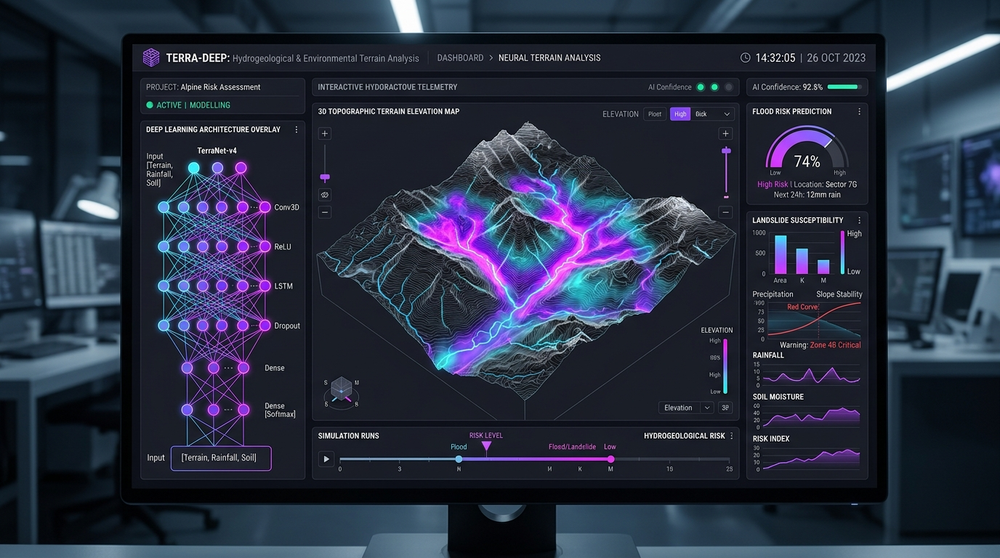

Deep Learning & AI
Tesi: Deep Learning per il Rischio Idrogeologico
Studio e applicazione di architetture di Deep Learning per l'elaborazione di dati geo-ambientali, analisi del territorio e modelli predittivi per la stima e mitigazione del rischio idrogeologico.
Tesi di Laurea